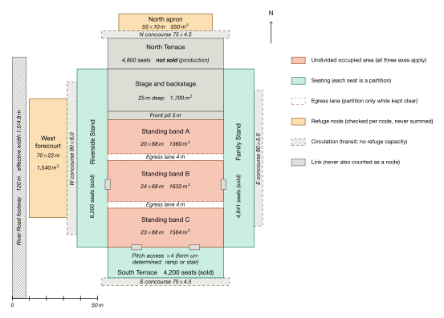

The P-index Framework
Whether a crowd can be compressed to the point of harm is decided by the shape of the space it occupies, and the shape is fixed at design stage. This framework reads that question off the drawing.
Density does not answer it. Tokyo's Yamanote Line operates routinely at 6–7 persons/m2 without recorded compressive-asphyxia incidents, while fatal crowd compressions have occurred at the same densities and at lower ones. The quantity that separates the two cases is not how many people are present.
It is how many directions of travel the region admits. A run bounded on both flanks supplies an alignment that an open region divides among several directions, and the difference is large enough to carry a crowd across the threshold at which load begins to accumulate — with no one exerting themselves any harder. That property is set by the built form and by nothing else.
What a complete assessment reads
The demonstration is an open venue: one kind of surface, no seats, and nothing that interrupts a run. Most venues are not like that.
This is a stadium in concert configuration — the same geometry that holds a football fixture, rearranged so that a standing audience occupies the pitch. It carries six kinds of element and they do not behave alike. Seating partitions. An egress lane partitions only while it is kept clear. A refuge node is checked against the population routed to it and never added to another. Circulation moves people and holds none. A link is neither. And four accesses appear whose form has not been fixed.
Complexity here is not a matter of size. It is how many kinds of element the geometry contains and how they interact, and that is what separates a venue that needs an assessment from one that can be read off a sample.

- 01 Seating is a partition. Each seat interrupts a connected run, which is why a seated block and an open standing band of the same area do not carry the same guarantee.
- 02 Refuge is checked per node and never summed. Two nodes of a given capacity are not one node of twice that capacity, and the drawing records them separately for that reason.
- 03 What is undetermined is recorded as undetermined. Four pitch accesses appear on this drawing without a stated form, because the form has not been fixed — and an assessment says so rather than assuming one.
Two kinds of safety, equivalent in verdict and not otherwise
A configuration can fail to produce the mechanism because its shape does not admit one, or because a measure prevents one. Both satisfy the same criterion. They differ in that the second has an execution rate and the first does not.
And a lapse in the second is not recovered by resuming it. Forming a compacted region requires work; maintaining it requires none. What forms during a lapse persists after the measure is restored. An operational measure can be specified at any point in a venue's life; a shape that requires no measure can only be chosen while the shape is still being chosen.
What an assessment delivers
A load guarantee
For each region admitting a connected run: the partition spacing adopted, the load that spacing guarantees, and the premise the guarantee rests on. The figure follows from the drawing and the packing limit; apart from a declared exertion, nothing else enters.
A three-state element list
Each element classified as closed by its shape, closable by a measure of stated dimension, or not closable within scope. Its commercial form is a count: how many elements still rest on someone doing something correctly.
The mechanical image of a standard
A density, a width or a timing requirement in the governing guidance implies a per-person load, and the conversion states which. It compares two instruments; it does not determine compliance, which is not this framework's to determine.
The design variable that follows is a partition spacing rather than a headcount. None of the load relations contains a number of people: two hundred occupants at a given spacing and two hundred thousand at the same spacing carry the same guarantee, because what the relation bounds is the length of a connected run.
Where the framework stops
Three quantities are missing — the per-contributor exertion, the residual a standing body absorbs, and the rate at which a region fills — and all three fall on the force and time axes. The space axis, the one a building controls, is complete. Three of the missing quantities are properties of bodies rather than of any site: measured once, and thereafter available to everyone.
The framework also adopts no threshold. It establishes what load a configuration can produce and how that load accumulates; it does not establish what load injures a person, and it catalogues external values for the reader's selection rather than selecting among them. A client adopting a different value obtains different figures from the same analysis, and the analysis is unchanged in form.
Four questions are outside the scope of an assessment and are stated in its terms rather than in a footnote: when a region will fill; the density at which to act; the quantitative treatment of intersecting streams; and whether a venue is safe. Nothing in an assessment permits a configuration to be occupied or withholds permission.
Assessment products
Pre-event geometric assessment
Closed form; no model is run. Load bounds, grouping and partition dimensions, and the three-state classification, from the drawing and a declared exertion — by arithmetic a reader can check by hand. A sample deliverable covering the built-form row is available below.
Retrospective backtrack analysis
Closed form; retrospective. Whether a geometry, as built and occupied, suffices to produce a stated load. Reported as a lower bound rather than a fitted value.
Venue P-report
A model is run, and the trajectory and magnitude of P are computed. P takes a positive value only in reconstruction, so this is the one product that computes it. No instance has yet been produced.
The dividing line between the first two and the third is whether a model is run, and it is not a difference of depth. They differ in price and in delivery time by an order of magnitude, which is why the line is drawn here rather than left as a matter of scope.
Documents
A Physical Quantification Framework for Crowd Compression Risk
The P-index System and Its Contact-Mechanical Foundation
Architectural Integration
Reading the onset condition off the access geometry at design stage
Duisburg, 24 July 2010
The access route as a validation case
Publication August 2026.
All Nine Cells
Rivergate Yard — the same fictional venue, assessed in full
Engagement
Two assessment products are in service, both closed-form. Each answers what a geometry permits, from the drawing and a declared exertion, by arithmetic that can be checked by hand rather than taken on trust.
The design-stage form of the work — entering a live design process and being relied upon within it — is a capability of the framework rather than a service currently offered. The order is deliberate: the assessments above require no qualification to perform and carry the lower risk, and the design-stage engagement is taken up after that work has established a record.
The work is arranged so that it can be paid for twice. A first purchase covers the demonstration and the assessment of your own access geometry, and returns a quotation for the full assessment together with a list of any further material required. A second covers that assessment. Nothing between the two requires a separate authorisation.
The first stage — the full nine-cell demonstration on a fictional venue — can be purchased directly. It is issued by email within one business day.
Fees for the first stages are fixed and are stated in the sample deliverable, because they can be set without seeing the site: two of them are documents that already exist, and the third is read from drawings. Beyond that, scope and fee are set per configuration, against the extent of the region assessed and the number of scenarios carried — and the quantities that determine them are the ones the earlier stage establishes, which is why the quotation is delivered with it rather than before it.
A quotation carries no expiry, and neither does credit from an earlier stage. If the framework is revised substantially enough to change what a quotation rested on, the quotation is reissued and the difference is met here rather than by the client.
The terms on which reports are sold — licence, delivery, credit, refunds, and what is not provided — are set out in full in the Terms of Sale. They apply to assessment reports and not to any licensing of the simulation engine, which is separately agreed.
Initial inquiry: written technical or commercial communication to kevin@pneumatheorem.org. Responded to within five business days.